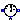
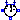
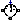
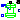
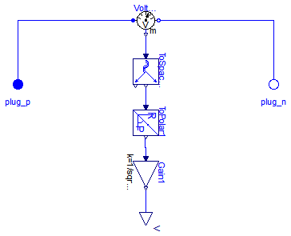
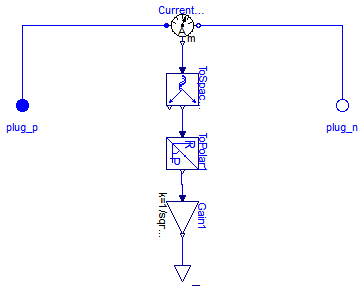
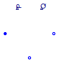
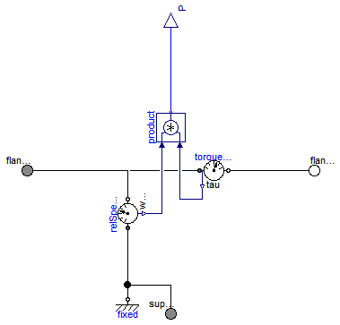
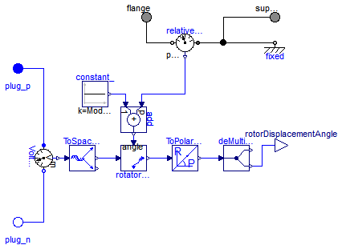

Modelica.Electrical.Machines.Sensors.CurrentQuasiRMSSensor
Modelica.Electrical.Machines.Sensors.CurrentQuasiRMSSensor
Extends from Modelica.Icons.SensorsPackage (Icon for packages containing sensors).
| Name | Description |
|---|---|
|  VoltageQuasiRMSSensor | Length of space phasor -> RMS voltage |
| CurrentQuasiRMSSensor | Length of space phasor -> RMS current |
|  ElectricalPowerSensor | Instantaneous power from space phasors |
|  MechanicalPowerSensor | Mechanical power = torque x speed |
|  RotorDisplacementAngle | Rotor lagging angle |

| Type | Name | Description |
|---|---|---|
| output RealOutput | V | |
| PositivePlug | plug_p | |
| NegativePlug | plug_n |
model VoltageQuasiRMSSensor "Length of space phasor -> RMS voltage" constant Integer m(final min=1) = 3 "Number of phases";Modelica.Blocks.Interfaces.RealOutput V; Modelica.Electrical.MultiPhase.Interfaces.PositivePlug plug_p(final m=m); Modelica.Electrical.MultiPhase.Interfaces.NegativePlug plug_n(final m=m); Modelica.Electrical.MultiPhase.Sensors.VoltageSensor VoltageSensor1(final m=m); Modelica.Blocks.Math.Gain Gain1(final k=1/sqrt(2)); Machines.SpacePhasors.Blocks.ToSpacePhasor ToSpacePhasor1; Machines.SpacePhasors.Blocks.ToPolar ToPolar1; equationconnect(plug_p, VoltageSensor1.plug_p); connect(VoltageSensor1.plug_n, plug_n); connect(VoltageSensor1.v, ToSpacePhasor1.u); connect(ToSpacePhasor1.y, ToPolar1.u); connect(ToPolar1.y[1], Gain1.u); connect(Gain1.y, V); end VoltageQuasiRMSSensor;
Modelica.Electrical.Machines.Sensors.CurrentQuasiRMSSensor
| Type | Name | Description |
|---|---|---|
| output RealOutput | I | |
| PositivePlug | plug_p | |
| NegativePlug | plug_n |
model CurrentQuasiRMSSensor "Length of space phasor -> RMS current" constant Integer m(final min=1) = 3 "Number of phases";Modelica.Blocks.Interfaces.RealOutput I; Modelica.Electrical.MultiPhase.Interfaces.PositivePlug plug_p(final m=m); Modelica.Electrical.MultiPhase.Interfaces.NegativePlug plug_n(final m=m); Modelica.Electrical.MultiPhase.Sensors.CurrentSensor CurrentSensor1(final m=m); Modelica.Blocks.Math.Gain Gain1(final k=1/sqrt(2)); Machines.SpacePhasors.Blocks.ToSpacePhasor ToSpacePhasor1; Machines.SpacePhasors.Blocks.ToPolar ToPolar1; equationconnect(plug_p, CurrentSensor1.plug_p); connect(CurrentSensor1.plug_n, plug_n); connect(CurrentSensor1.i, ToSpacePhasor1.u); connect(ToSpacePhasor1.y, ToPolar1.u); connect(ToPolar1.y[1], Gain1.u); connect(Gain1.y,I); end CurrentQuasiRMSSensor;

| Type | Name | Description |
|---|---|---|
| output RealOutput | P | |
| output RealOutput | Q | |
| PositivePlug | plug_p | |
| NegativePlug | plug_ni | |
| NegativePlug | plug_nv |
model ElectricalPowerSensor "Instantaneous power from space phasors" constant Integer m(final min=1) = 3 "Number of phases";Modelica.Blocks.Interfaces.RealOutput P; Modelica.Blocks.Interfaces.RealOutput Q; Modelica.Electrical.MultiPhase.Interfaces.PositivePlug plug_p(final m=m); Modelica.Electrical.MultiPhase.Interfaces.NegativePlug plug_ni(final m=m); Modelica.Electrical.MultiPhase.Interfaces.NegativePlug plug_nv(final m=m); protected Modelica.SIunits.Voltage v_[2]; Modelica.SIunits.Current i_[2]; equation plug_p.pin.v = plug_ni.pin.v; plug_p.pin.i + plug_ni.pin.i = zeros(m); plug_nv.pin.i = zeros(m); v_ = Machines.SpacePhasors.Functions.ToSpacePhasor(plug_p.pin.v - plug_nv.pin.v); i_ = Machines.SpacePhasors.Functions.ToSpacePhasor(plug_p.pin.i); 2/3*P = +v_[1]*i_[1]+v_[2]*i_[2]; 2/3*Q = -v_[1]*i_[2]+v_[2]*i_[1];end ElectricalPowerSensor;

Extends from Modelica.Mechanics.Rotational.Interfaces.PartialTwoFlanges (Partial model for a component with two rotational 1-dim. shaft flanges).
| Type | Name | Default | Description |
|---|---|---|---|
| Boolean | useSupport | false | Use support or fixed housing |
| Type | Name | Description |
|---|---|---|
| Flange_a | flange_a | Flange of left shaft |
| Flange_b | flange_b | Flange of right shaft |
| output RealOutput | P | |
| Flange_a | support | Support at which the reaction torque is acting |
model MechanicalPowerSensor "Mechanical power = torque x speed" extends Modelica.Mechanics.Rotational.Interfaces.PartialTwoFlanges; parameter Boolean useSupport=false "Use support or fixed housing";Modelica.Blocks.Interfaces.RealOutput P; Modelica.Mechanics.Rotational.Sensors.TorqueSensor torqueSensor; Modelica.Blocks.Math.Product product; Modelica.Mechanics.Rotational.Sensors.RelSpeedSensor relSpeedSensor; Modelica.Mechanics.Rotational.Components.Fixed fixed if (not useSupport); Modelica.Mechanics.Rotational.Interfaces.Flange_a support if useSupport "Support at which the reaction torque is acting"; equationconnect(flange_a, torqueSensor.flange_a); connect(torqueSensor.flange_b, flange_b); connect(product.y, P); connect(torqueSensor.tau, product.u2); connect(flange_a, relSpeedSensor.flange_b); connect(relSpeedSensor.w_rel, product.u1); connect(relSpeedSensor.flange_a, fixed.flange); connect(relSpeedSensor.flange_a, support); end MechanicalPowerSensor;

The sensor's housing can be implicitely fixed (useSupport=false).
If the machine's stator also implicitely fixed (useSupport=false), the angle at the flange
is equal to the angle of the machine's rotor against the stator.
Otherwise, the sensor's support has to be connected to the machine's support.
| Type | Name | Default | Description |
|---|---|---|---|
| Integer | p | Number of pole pairs | |
| Boolean | useSupport | false | Use support or fixed housing |
| Type | Name | Description |
|---|---|---|
| output RealOutput | rotorDisplacementAngle | |
| PositivePlug | plug_p | |
| NegativePlug | plug_n | |
| Flange_a | flange | |
| Flange_a | support | support at which the reaction torque is acting |
model RotorDisplacementAngle "Rotor lagging angle" constant Integer m=3 "Number of phases"; parameter Integer p(min=1) "Number of pole pairs"; parameter Boolean useSupport=false "Use support or fixed housing";Modelica.Blocks.Interfaces.RealOutput rotorDisplacementAngle; Modelica.Electrical.MultiPhase.Interfaces.PositivePlug plug_p(final m=m); Modelica.Electrical.MultiPhase.Interfaces.NegativePlug plug_n(final m=m); Modelica.Electrical.MultiPhase.Sensors.VoltageSensor VoltageSensor1(final m=m); Machines.SpacePhasors.Blocks.ToSpacePhasor ToSpacePhasorVS; Modelica.Mechanics.Rotational.Interfaces.Flange_a flange; Modelica.Mechanics.Rotational.Sensors.RelAngleSensor relativeAngleSensor; Modelica.Blocks.Sources.Constant constant_(final k=Modelica.Constants.pi/2); Modelica.Blocks.Math.Add add(final k2=1, final k1=p); Machines.SpacePhasors.Blocks.Rotator rotatorVS2R; Machines.SpacePhasors.Blocks.ToPolar ToPolarVSR; Modelica.Blocks.Routing.DeMultiplex2 deMultiplex2(final n1=1, final n2=1); Modelica.Mechanics.Rotational.Interfaces.Flange_a support if useSupport "support at which the reaction torque is acting"; Modelica.Mechanics.Rotational.Components.Fixed fixed if (not useSupport); equationconnect(constant_.y, add.u2); connect(add.y, rotatorVS2R.angle); connect(ToSpacePhasorVS.y, rotatorVS2R.u); connect(rotatorVS2R.y, ToPolarVSR.u); connect(ToPolarVSR.y, deMultiplex2.u); connect(plug_p, VoltageSensor1.plug_p); connect(plug_n, VoltageSensor1.plug_n); connect(VoltageSensor1.v, ToSpacePhasorVS.u); connect(deMultiplex2.y2[1], rotorDisplacementAngle); connect(relativeAngleSensor.phi_rel, add.u1); connect(relativeAngleSensor.flange_b, flange); connect(relativeAngleSensor.flange_a, support); connect(relativeAngleSensor.flange_a, fixed.flange); end RotorDisplacementAngle;